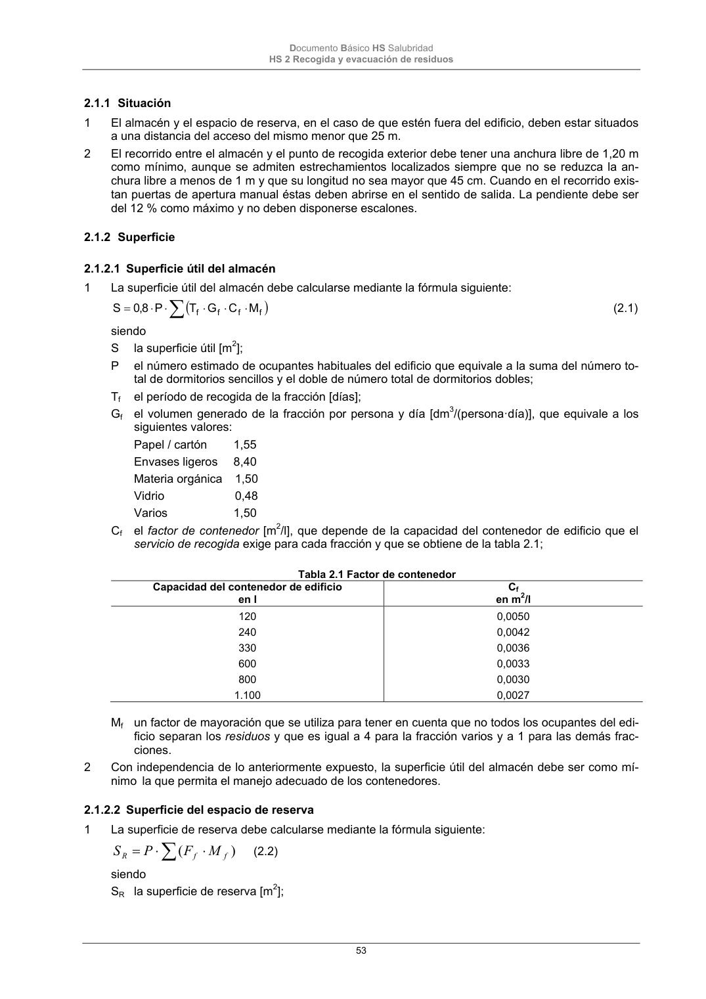

DB-HS Salubridad · edición 2022-06-14 · capa oficial
Documento DB-HS-oficial · SHA-256 del PDF 68df3caacc95f71aee2ec1ba7b2c65ae66155c21e3a8785521b8fdd4fd640d3b
Copia fiel del PDF fuente · Fuente oficial
Ficha de la disposición en la fuente oficial
Formatos: JSON del segmento · Markdown
2.1.1 Situación 1 El almacén y el espacio de reserva, en el caso de que estén fuera del edificio, deben estar situados a una distancia del acceso del mismo menor que 25 m. 2 El recorrido entre el almacén y el punto de recogida exterior debe tener una anchura libre de 1,20 m como mínimo, aunque se admiten estrechamientos localizados siempre que no se reduzca la an- chura libre a menos de 1 m y que su longitud no sea mayor que 45 cm. Cuando en el recorrido exis- tan puertas de apertura manual éstas deben abrirse en el sentido de salida. La pendiente debe ser del 12 % como máximo y no deben disponerse escalones.
